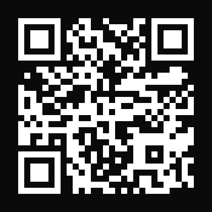

NEXUS · CONSOLE
三月
空间
SCAN TO ACCESS
扫码直接访问
不用点链接，不怕被屏蔽

1
打开手机相机
，对准二维码
2
屏幕顶部会弹出提示，
点击即可打开
3
自动跳转到
手机浏览器
，正常访问
用微信扫码也可以，但部分内容微信可能会拦截。
建议优先用
系统相机
扫，稳定性更好。
WHAT'S INSIDE
进去能找到什么
HOT
🎬
TikTok 入门课
从网络配置到账号运营，14节完整课程，0基础可学
NEW
🤖
N8N 自动化工具
AI 驱动的视频切片、二创、混剪流水线，一键出片
👥
站长社群
一起研究搞钱，共同解决问题，不单打独斗
🛠️
工具导航
精选实用工具合集，省去自己踩坑的时间
也可以直接在浏览器地址栏输入访问
sanyue.help